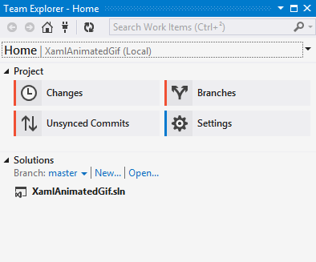
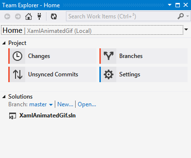

Visual Studio Online + Git integration with Team Explorer
I recently started using Visual Studio Online for personal projects, and I must say it’s a pretty good platform, although it would be nice to be able to host public projects as well as private ones. The thing I like the most is the integration with Visual Studio Team Explorer to manage work items and builds.
However, I noticed a little gotcha when using Git for source control : the remote for VS Online must be named origin, otherwise Team Explorer won’t detect that it’s a VS Online project, and it won’t show the “Builds” and “Work items” pages.
 

This is obviously a bug (although a minor one), since the name origin is just a convention and a git remote can have any name; I reported it on Connect. If you encounter it you can easily work around it by renaming your remote to origin:
git remote rename vso origin